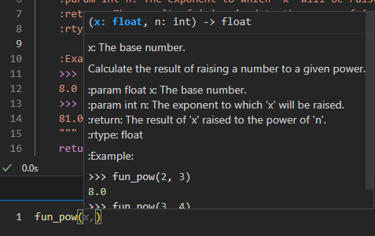

Podstawy Python#
Czym jest Python ?
Język programowania wysokiego poziomu o rozbudowanym pakiecie bibliotek standardowych, którego ideą przewodnią jest czytelność i klarowność kodu źródłowego. Python rozwijany jest jako projekt open source zarządzany przez Python Software Foundation, która jest organizacją non-profit.
Zen of Python
Zen Pythona to zbiór 19 „zasad przewodnich” dotyczących pisania programów komputerowych, które wpływają na konstrukcję języka programowania Python. Inżynier oprogramowania Tim Peters napisał ten zbiór zasad i umieścił go na liście mailingowej Pythona w 1999 roku. Lista Petersa pozostawiła otwartą dwudziestą zasadę „do wypełnienia przez Guido”, odnoszącą się do Guido van Rossuma, pierwotnego autora języka Python. Wakat na zasadzie 20. nie został obsadzony.
Beautiful is better than ugly.
Explicit is better than implicit.
Simple is better than complex.
Complex is better than complicated.
Flat is better than nested.
Sparse is better than dense.
Readability counts.
Special cases aren't special enough to break the rules.
Although practicality beats purity.
Errors should never pass silently.
Unless explicitly silenced.
In the face of ambiguity, refuse the temptation to guess.
There should be one-- and preferably only one --obvious way to do it.[a]
Although that way may not be obvious at first unless you're Dutch.
Now is better than never.
Although never is often better than right now.[b]
If the implementation is hard to explain, it's a bad idea.
If the implementation is easy to explain, it may be a good idea.
Namespaces are one honking great idea – let's do more of those!
Typy danych#
W Python rozróżniamy kilka podstawowych typów danych. Poniżej poświęcimy czas “na naszym zdaniem” najważniejsze wbudowane typy danych w Python.
Text Type
string
Numeric Types:
integer
float
Boolean Type
bool
None Type
none
Sequence Types
list
tuple
Set Type
set
Mapping Type
dict
Text Type#
String#
string_ex = 'example'
print(f'Variable: {string_ex}')
print(f'Type: {type(string_ex)}')
Variable: example
Type: <class 'str'>
string_ex = "example"
print(f"Variable: {string_ex}")
print(f"Type: {type(string_ex)}")
Variable: example
Type: <class 'str'>
Wielolinowy ciąg znaków wygląda następująco:
string_ex = """
Few
lines
string
"""
print(f"Variable: {string_ex}")
print(f"Type: {type(string_ex)}")
Variable:
Few
lines
string
Type: <class 'str'>
Podstawowe operacje#
Do podstawowych grup operacji na stringach zaliczamy:
slicing
concatenate
modify
txt = " Hello, World! "
Slicing
print(txt[1])
print(txt[8:13])
H
World
Concatenate
print(txt + '!!! :)')
print(txt + " " + txt)
Hello, World! !!! :)
Hello, World! Hello, World!
Modify
print(" ".join(txt))
print(txt.upper())
print(txt.lower())
print(txt.capitalize())
print(txt.strip())
print(txt.split(','))
print(txt.replace('W', 'O'))
H e l l o , W o r l d !
HELLO, WORLD!
hello, world!
hello, world!
Hello, World!
[' Hello', ' World! ']
Hello, Oorld!
Numeric Types#
Integer#
int_ex = 1
print(f"Variable: {int_ex}")
print(f"Type: {type(int_ex)}")
Variable: 1
Type: <class 'int'>
Float#
float_ex = 1.0
print(f"Variable: {float_ex}")
print(f"Type: {type(float_ex)}")
Variable: 1.0
Type: <class 'float'>
Boolean Type#
Bool#
bool_ex = True
print(f"Variable: {bool_ex}")
print(f"Type: {type(bool_ex)}")
Variable: True
Type: <class 'bool'>
Dodatkowo True jest równe 1, a False 0
print(f"True == 1 -> {True == 1}")
print(f"False == 0 -> {False == 0}")
True == 1 -> True
False == 0 -> True
None Type#
None#
none_ex = None
print(f"Variable: {none_ex}")
print(f"Type: {type(none_ex)}")
Variable: None
Type: <class 'NoneType'>
Sequence Types#
List#
- uporządkowanie - elementy w liście mają zdefiniowaną kolejność i tej kolejności nie możemy zmienić
- możliwość zmiany wyrażenia - dowolny element listy możemy nadpisać
- pozwala na duplikaty - możemy mieć w liście dowolną ilość takich samych wartości elementów
list_example = [1, 2, 3, 4]
print(f"Variable: {list_example}")
print(f"Type: {type(list_example)}")
Variable: [1, 2, 3, 4]
Type: <class 'list'>
W listach możemy mieszać różne typy zmiennych:
list_mix_example = [1, 'abc', 3.0, [1, 'xyz']]
print(f"Variable: {list_mix_example}")
print(f"Type: {type(list_mix_example)}")
Variable: [1, 'abc', 3.0, [1, 'xyz']]
Type: <class 'list'>
Przykład 1 (filtrowanie elementów listy)#
Często będziemy potrzebować określonego elementu z listy w celu wyświetlenia, nadpisania, wykorzystania w kolejnych operacjach, itd. Aby to zrobić posługujemy się nawiasami kwadratowymi. Należy pamiętać, że indeksowanie w pythonie odbywa się od 0!
list_example = [1, 2, 3, 4]
print(f"List: {list_example}")
print(f"3rd element of list: {list_example[2]}")
print(f"Last element of list: {list_example[-1]}")
print(f"Every element from the 2nd one: {list_example[1:]}")
print(f"Two last elements of list: {list_example[-2:]}")
print(f"Two first elements of list: {list_example[:2]}")
print(f"From 2nd to 3rd element: {list_example[1:3]}")
List: [1, 2, 3, 4]
3rd element of list: 3
Last element of list: 4
Every element from the 2nd one: [2, 3, 4]
Two last elements of list: [3, 4]
Two first elements of list: [1, 2]
From 2nd to 3rd element: [2, 3]
Co w przypadku listy zagnieżdżonej (lista w liście)
list_example = [[1, 2, 3], [4, 5, 6], [7, 8, 9]]
print(f"List: {list_example}")
print(f"3rd element of list {list_example[2]}")
print(f"1st element of 2nd list: {list_example[1][0]}")
List: [[1, 2, 3], [4, 5, 6], [7, 8, 9]]
3rd element of list [7, 8, 9]
1st element of 2nd list: 4
Przykład 2 (długość)#
list_example = [1, 2, 3, 4]
print(f"List length: {len(list_example)}")
List length: 4
list_example = [[1, 2, 3], [4, 5, 6], [7, 8, 9]]
print(f"List length: {len(list_example)}")
List length: 3
Przykład 3 (operacje dodawania)#
Dodawanie list polega na połączeniu list w jedną. Nie polega to na dodawaniu odpowiednich elemntów do siebie (o tym jak to zrobić pokazane zostanie w dziale list comprehension).
list_a = [1, 2]
list_b = [3, 4]
print(f"List a = {list_a} \nList b = {list_b} \nList a+b = {list_a + list_b}")
List a = [1, 2]
List b = [3, 4]
List a+b = [1, 2, 3, 4]
To samo możemy uzyskać wywołując metodę extend
list_a = [1, 2]
list_b = [3, 4]
print(f"List a: {list_a}\nList b = {list_b}")
list_a.extend(list_b)
print("List after extend element: {}".format(list_a))
List a: [1, 2]
List b = [3, 4]
List after extend element: [1, 2, 3, 4]
Innym sposobem na dodanie elementu jest funkcja append
list_ex = [1, 2]
elem_to_add = 3
print(f"List: {list_ex}")
list_ex.append(elem_to_add)
print("List after adding element: {}".format(list_ex))
List: [1, 2]
List after adding element: [1, 2, 3]
Należy jednak uważać na dodawanie listy przy użyciu append
list_ex = [1, 2]
list_to_add = [3, 4]
print(f"List: {list_ex}")
list_ex.append(list_to_add)
print("List after adding element: {}".format(list_ex))
List: [1, 2]
List after adding element: [1, 2, [3, 4]]
Na listach możemyu robić też inne operacje. Szczegóły pod linkiem: https://www.w3schools.com/python/python_lists_methods.asp
Tuple#
tuple_ex = (1, 2)
print(f"Variable: {tuple_ex}")
print(f"Type: {type(tuple_ex)}")
Variable: (1, 2)
Type: <class 'tuple'>
list_ex = [1, 2]
list_ex[0] = 3
tuple_ex = (1, 2)
tuple_ex[0] = 3
---------------------------------------------------------------------------
TypeError Traceback (most recent call last)
Cell In[25], line 2
1 tuple_ex = (1, 2)
----> 2 tuple_ex[0] = 3
TypeError: 'tuple' object does not support item assignment
Również i w tym przypadku możemy przechowywać różne typy danych
tuple_ex = (1, 'abc', [1, 2.0, 'xyz'], ('edf', 3.0))
print(f"Variable: {tuple_ex}")
print(f"Type: {type(tuple_ex)}")
Variable: (1, 'abc', [1, 2.0, 'xyz'], ('edf', 3.0))
Type: <class 'tuple'>
Set Type#
Set#
set_ex = {1, 'abc', 1}
print(f"Variable: {set_ex}")
print(f"Type: {type(set_ex)}")
Variable: {1, 'abc'}
Type: <class 'set'>
Szybki sposób na usunięcie duplikatów z listy:
l = [1, 1, 1, 2, 2, 3]
print(f"Lista bez unikalnych wyrazów: {l}")
l = set(l)
print(f"Set: {l}")
l = list(l)
print(f"Lista z unikalnymi wyrazami: {l}")
Lista bez unikalnych wyrazów: [1, 1, 1, 2, 2, 3]
Set: {1, 2, 3}
Lista z unikalnymi wyrazami: [1, 2, 3]
Mapping Type#
Dict#
dict_ex = {
'key1': 'val1',
'key2': 'val2',
'key3': 'val3'
}
print(f"Variable: {dict_ex}")
print(f"Type: {type(dict_ex)}")
Variable: {'key1': 'val1', 'key2': 'val2', 'key3': 'val3'}
Type: <class 'dict'>
dict_ex = dict(key1='val1', key2='val2', key3='val3')
print(f"Variable: {dict_ex}")
print(f"Type: {type(dict_ex)}")
Variable: {'key1': 'val1', 'key2': 'val2', 'key3': 'val3'}
Type: <class 'dict'>
dict_ex = {'key1': 'val1', 'key2': 'val2', 'key3': 'val3'}
print(f"Value for key1: {dict_ex['key1']}")
dict_ex['key1'] = 'new_val1'
print(f"New value for key1: {dict_ex['key1']}")
dict_ex['new_key'] = 17
print(dict_ex)
Value for key1: val1
New value for key1: new_val1
{'key1': 'new_val1', 'key2': 'val2', 'key3': 'val3', 'new_key': 17}
Zmiana typów zmiennych#
Zdarzyć się może, że potrzebujemy innego typu dla aktualnie badanej zmiennej. Na przykład liczbę chcemy przedstawić jako string lub float jako int. Podobnie z innymi strukturami np. zmiana list na set, lub tuple na list. Poniżej przykłady takich działań.
Przykład 1 (string -> int, float)#
string_ex = "22"
print(f"Variable: {string_ex}")
print(f"Type: {type(string_ex)}")
Variable: 22
Type: <class 'str'>
int_from_str_ex = int(string_ex)
print(f"Variable: {int_from_str_ex}")
print(f"Type: {type(int_from_str_ex)}")
Variable: 22
Type: <class 'int'>
float_from_str_ex = float(string_ex)
print(f"Variable: {float_from_str_ex}")
print(f"Type: {type(float_from_str_ex)}")
Variable: 22.0
Type: <class 'float'>
Przykład 2 (list -> set, tuple)#
ex_list = [1, 1, 2, 3, 4]
print(f"Variable: {ex_list}")
print(f"Type: {type(ex_list)}")
ex_tuple = tuple(ex_list)
print(f"Variable: {ex_tuple}")
print(f"Type: {type(ex_tuple)}")
Variable: (1, 1, 2, 3, 4)
Type: <class 'tuple'>
ex_set = set(ex_list)
print(f"Variable: {ex_set}")
print(f"Type: {type(ex_set)}")
Variable: [1, 1, 2, 3, 4]
Type: <class 'list'>
Variable: {1, 2, 3, 4}
Type: <class 'set'>
Pętle#
Pętle służa do iteracji pod sekwencji np. list, tuple, dict czy set. Dzięki pętlom możemy wykonywać zestaw instrukcji, raz dla każdego elementu sekwencji.
For#
for i in [1, 2, 3]:
print("Now 'i' is equal to {}".format(i))
Now 'i' is equal to 1
Now 'i' is equal to 2
Now 'i' is equal to 3
Czasami, potrzebujemy wiedziec po ktorym indeksie listy iterujemy. Wtedy przydaje sie wyrazenie enumerate.
ex_list = ['a', 'b', 'c']
for num, i in enumerate(ex_list):
print(f"{num} element from list")
print("Now 'i' is equal to {}".format(i))
0 element from list
Now 'i' is equal to a
1 element from list
Now 'i' is equal to b
2 element from list
Now 'i' is equal to c
Iterowanie po słowniku:
dict_ex = {'key1': 'val1', 'key2': 'val2', 'key3': 'val3'}
for key, val in dict_ex.items():
print(key, val)
key1 val1
key2 val2
key3 val3
While#
i = 1
while i < 4:
print("Now 'i' is equal to {}".format(i))
i += 1 #same as i = i + 1
Now 'i' is equal to 1
Now 'i' is equal to 2
Now 'i' is equal to 3
Bardzo łatwo jest stworzyć nieskończoną pętlę przy pomocy while. Wystarczy, żeby warunek logcziny zawsze był spełniony:
while True:
print("Halo? Pomocy!!! JAK STĄD SIĘ WYDOSTAĆ?!")
Instrukcje warunkowe#
Podczas pisania kodu często potrzebujemy zrobić daną rzecz tylko w przypadku spełnienia określonych warunków. Do tego służą instrukcje warunkowe.
Warunki logiczne#
print(f"1 == 2: {1 == 2}")
print(f"1 != 2: {1 != 2}")
print(f"1 < 2: {1 < 2}")
print(f"1 >= 2: {1 >= 2}")
1 == 2: False
1 != 2: True
1 < 2: True
1 >= 2: False
Operatory is, in, not#
num = 2
print(num in [1, 2, 3, 4, 5])
True
num1 = [1, 2, 4]
num2 = num1
num2.append(3)
print(num1)
print(num2)
print(num1 is num2)
[1, 2, 4, 3]
[1, 2, 4, 3]
True
num = 10
print(num not in [1, 2, 3, 4, 5])
True
If … Else#
Kiedy chcemy, żeby coś się zadziało w sytuacji kiedy warunek logiczny jest spełniony wykorzystujemy if
Przykład 1 (if)#
if 1 + 1 * 1 <= 2:
print("True condition :)")
True condition :)
Co w sytuacji, kiedy chcemy, żeby zadziała się akcja w przeciwnym przypadku? Używamy else
Przykład 2 (if .. else)#
for i in [1, 2, 3]:
if i == 1:
print("Now 'i' is equal to 1")
else:
print("Now 'i' is not equal to 1")
Now 'i' is equal to 1
Now 'i' is not equal to 1
Now 'i' is not equal to 1
Przykład 3 (if … elif … else)#
Co w przypadku kiedy mamy kilka warunków? Używamy elif
for i in [1, 2, 3, 4, 5]:
if i <= 1:
print(f"i = {i} :)")
elif i > 1 and i < 4:
print(f"i = {i} :D")
else:
print(f"i = {i} ^^")
i = 1 :)
i = 2 :D
i = 3 :D
i = 4 ^^
i = 5 ^^
Comprehensions#
Comprehensions w Python zapewniają krótki i zwięzły sposób na konstruowanie nowych sekwencji takich jak, list, set, dict przy użyciu wcześniej zdefiniowanych sekwencji. Python osbługuje 4 typy comprehesions: List, Dictionary, Set oraz Generator. Poniżej zostaną omówione dwa pierwsze.
List comprehensions#
Weźmy na przykład taką pętlę, w której w kolejnych iteracjach dodajemy nowe elementy do listy:
l = []
for i in range(1, 4):
l.append(i+5)
print(l)
[6, 7, 8]
Można to zapisać w jednoliniowej formie:
l = [i+5 for i in range(1, 4)]
print(l)
[6, 7, 8]
Z dodanym warunkiem logicznym
l = []
for i in [1, 2, 3]:
if i == 1:
l.append(0)
else:
l.append(i+5)
print(l)
[0, 7, 8]
l = [i+5 if i != 1 else 0 for i in [1, 2, 3]]
print(l)
[0, 7, 8]
Czasem jednak warto się zastanowić, czy chcemy tworzyć mało czytelnego potworka, czy jednak warto zapisać te kilka linijek kodu więcej
l = [i+5*i-i**2 if i != 1 or i > 3 else i+2*i-i**2 for i in [1, 2, 3, 4]]
print(l)
[2, 8, 9, 8]
Przykład zastosowania: dodawanie odpowiednich elementów do siebie w dwóch listach
Przy użyciu funkcji range
list_a = [1, 2]
list_b = [3, 4]
n = len(list_a)
res = [list_a[i] + list_b[i] for i in range(n)]
print(f"Result = {res}")
Result = [4, 6]
Przy użyciu funkcji zip
list_a = [1, 2]
list_b = [3, 4]
res = [i+j for i, j in zip(list_a, list_b)]
print(f"Result = {res}")
Result = [4, 6]
Dict comprehensions#
Na tej samej zasadzie możemy tworzyć słownik
keys = ['a', 'b', 'c']
dict_ex = {i: [i+'1', i+'2'] for i in keys}
print(dict_ex)
{'a': ['a1', 'a2'], 'b': ['b1', 'b2'], 'c': ['c1', 'c2']}
Zadanie 1#
Stwórz dwie krotki:
key_tuple z elementami ‘a’, ‘b’, ‘c’, ‘d’, ‘e’
val_tuple z elementami ‘a_value’, ‘b_value’, ‘c_value’, ‘d_value’, ‘e_value’
Stwórz słownik dict_input gdzie kluczami są elementy key_tuple, a wartościami odpowiednie elementy val_tuple. Zrób to na dwa sposoby:
skorzystaj z pętli for
skorzystaj z funkcji zip oraz dict comprehension.
Stwórz słownik dict_output, gdzie kluczami będą kolejne wartości słownika dict_input z tym wyjątkiem, że część _value zostanie zastąpiona stringiem _key. Natomiast wartościami w tym słowniku będą klucze słownika dict_input.
Rezultat:
dict_input:
{'a': 'a_value', 'b': 'b_value', 'c': 'c_value', 'd': 'd_value', 'e': 'e_value'}dict_output:
{'a_key': 'a', 'b_key': 'b', 'c_key': 'c', 'd_key': 'd', 'e_key': 'e'}
Wbudowane funkcje#
print#
Funkcja służąca do wyświetlania wiadomości
print("Hello world!")
Hello world!
i = 1
print(i)
print(f"i is equal to {i}")
print("i is equal to {}".format(i))
print("i is equal to {arg1:.2f} \ni+2 is equal to {arg2:n}".format(arg1=i, arg2=i+2))
1
i is equal to 1
i is equal to 1
i is equal to 1.00
i+2 is equal to 3
Typy danych przy użyciu format: https://www.w3schools.com/python/ref_string_format.asp
range#
Zwraca sekwencję liczb (domyślnie zaczynając od 0) rosnącą o określoną liczbę (domyślnie 1) i zatrzymującą się przed określoną liczbą. Służy do iterowania w pętlach.
for i in range(6):
print(i)
0
1
2
3
4
5
for i in range(3, 9, 2):
print(i)
3
5
7
len#
Zwraca długość obiektu
obj_ex = [1, 2, 3]
print("Length of object {} is: {}".format(obj_ex, len(obj_ex)))
obj_ex = [1, 2, [5, 7]]
print("Length of object {} is: {}".format(obj_ex, len(obj_ex)))
obj_ex = "string"
print("Length of object '{}' is: {}".format(obj_ex, len(obj_ex)))
Length of object [1, 2, 3] is: 3
Length of object [1, 2, [5, 7]] is: 3
Length of object 'string' is: 6
min, max#
Wartość minimalna, maksymalna. Dla ciagów znaków wykonywane jest porównanie alfabetyczne.
print(f"Min of {1, 3, 7} is {min(1, 3, 7)}")
print(f"Max of {1, 3, 7} is {max(1, 3, 7)}")
print(f"Min of {'abc', 'xyz', 'abcd'} is {min('abc', 'xyz', 'abcd')}")
print(f"Max of {'abc', 'xyz', 'abcd'} is {max('abc', 'xyz', 'abcd')}")
Min of (1, 3, 7) is 1
Max of (1, 3, 7) is 7
Min of ('abc', 'xyz', 'abcd') is abc
Max of ('abc', 'xyz', 'abcd') is xyz
round#
Funkcja round zwraca liczbę zmiennoprzecinkową, która jest zaokrągloną wersją podanej liczby, z określoną liczbą miejsc po przecinku.
Domyślna liczba miejsc po przecinku wynosi 0, co oznacza, że funkcja zwróci najbliższą liczbę całkowitą.
num = 1.77513
print(f"Round of {num} to 3rd decimal is {round(num, 3)}")
Round of 1.77513 to 3rd decimal is 1.775
Czasem jednak należy uważać na zaokrąglanie:
10 ** 0
1
import math
# defining round_half_up
def round_half_up(n, decimals=0):
multiplier = 10 ** decimals
return math.floor(n * multiplier + 0.5) / multiplier
round_half_up(9.5)
10.0
num = 10.5
print(f"Round of {num} to integer is {round(num)}")
num = 9.5
print(f"Round of {num} to integer is {round(num)}")
Round of 20.5 to integer is 20.0
Round of 10.5 to integer is 10.0
Czemu tak się dzieje?
Sposób Pythona 3 (nazywany “round half to even” lub “zaokrąglaniem bankiera”) jest obecnie uważany za standardową metodę zaokrąglania. Przy wielu obliczeniach prosta metoda “zaokrąglaj w górę” powoduje odchylenie danych do większych wartości, co może mieć wpływ na kolejne obliczenia.
sum#
Funkcja sum* zwraca liczbę, sumę wszystkich elementów w iterowalnym obiekcie.
ex = [1, 2, 3]
print(f"Sum of {ex} is {sum(ex)}")
ex = range(4)
print(f"Sum of {ex} is {sum(ex)}")
ex = (1, 2, 3)
print(f"Sum of {ex} is {sum(ex)}")
Sum of [1, 2, 3] is 6
Sum of range(0, 4) is 6
Sum of (1, 2, 3) is 6
Poniżej dwa przykłady na błędne wywołanie funkcji:
ex = [1, 2, [4, 5]]
print(f"Sum of {ex} is {sum(ex)}")
---------------------------------------------------------------------------
TypeError Traceback (most recent call last)
~\AppData\Local\Temp\ipykernel_20868\1354261088.py in <module>
1 ex = [1, 2, [4, 5]]
----> 2 print(f"Sum of {ex} is {sum(ex)}")
TypeError: unsupported operand type(s) for +: 'int' and 'list'
ex = 17
print(f"Sum of {ex} is {sum(ex)}")
---------------------------------------------------------------------------
TypeError Traceback (most recent call last)
~\AppData\Local\Temp\ipykernel_20868\2603094807.py in <module>
1 ex = 17
----> 2 print(f"Sum of {ex} is {sum(ex)}")
TypeError: 'int' object is not iterable
W pierwszym przypadku powinno się najpierw zrobić płaską listę (np. przy użyciu list comprehension)
ex = [1, 2, [4, 5]]
ex_corr = [item for sublist in ex for item in (sublist if type(sublist) == list else [sublist])]
print(f"Sum of {ex} is {sum(ex_corr)}")
Sum of [1, 2, [4, 5]] is 12
Przepisanie list comprehension na pętle
ex = [1, 2, [4, 5]]
ex_corr=[]
for sub_element in ex:
if type(sub_element) == list:
for item in sub_element:
ex_corr.append(item)
else:
ex_corr.append(sub_element)
zip#
Funkcja zip zwraca obiekt zip, który jest iteratorem krotek, w którym pierwszy element w każdym przekazanym iteratorze jest łączony w pary, a następnie drugi element w każdym przekazanym iteratorze jest łączony w pary itd.
Jeśli przekazane iteratory mają różne długości, iterator z najmniejszą liczbą elementów decyduje o długości nowego iteratora.
list_a = [1, 2, 3]
list_b = ['abc', 'zyx', 'xyz']
for i, j in zip(list_a, list_b):
print(i, j)
1 abc
2 zyx
3 xyz
Przydatne informacje#
Rozpiska wbudowanych funkcji: https://www.w3schools.com/python/python_ref_functions.asp
Błedy oraz obsługa wyjątków#
Istnieją co najmniej dwa rodzaje błedów: syntax errors oraz wyjątki (exceptions)
Parser powtarza błędną linię i wyświetla małą “strzałkę” wskazującą najwcześniejszy punkt linii, w którym wykryto błąd. Błąd jest spowodowany (lub przynajmniej wykryty) przez element poprzedzający strzałkę: w przykładzie błąd jest wykrywany w funkcji print(), ponieważ brakuje przed nią dwukropka (‘:’). Numer linii są wyśtwielane, aby było wiadome, gdzie szukać błędu.
while True print('Hello world')
Cell In[70], line 1
while True print('Hello world')
^
SyntaxError: invalid syntax
Nawet jeśli instrukcja lub wyrażenie jest poprawne składniowo, może spowodować błąd podczas próby jego wykonania. Błędy wykryte podczas wykonywania są nazywane wyjątkami.
10 * (1/0)
---------------------------------------------------------------------------
ZeroDivisionError Traceback (most recent call last)
c:\Users\jsmulski\kurs_analityk\notebooks\BasicsPython.ipynb Cell 146 line 1
----> <a href='vscode-notebook-cell:/c%3A/Users/jsmulski/kurs_analityk/notebooks/BasicsPython.ipynb#Y425sZmlsZQ%3D%3D?line=0'>1</a> 10 * (1/0)
ZeroDivisionError: division by zero
'2' + 2
---------------------------------------------------------------------------
TypeError Traceback (most recent call last)
c:\Users\jsmulski\kurs_analityk\notebooks\BasicsPython.ipynb Cell 147 line 1
----> <a href='vscode-notebook-cell:/c%3A/Users/jsmulski/kurs_analityk/notebooks/BasicsPython.ipynb#Y426sZmlsZQ%3D%3D?line=0'>1</a> '2' + 2
TypeError: can only concatenate str (not "int") to str
Jak obsługiwać wyjątki? Do tego można wykorzystać składnię Try…Except
list_a = [1, 2]
list_b = ['1', 3]
for i, j in zip(list_a, list_b):
try:
print(i+j)
except TypeError:
print("Wrong type of argument!")
Wrong type of argument!
5
list_a = [1, 2]
list_b = ['1', 3]
for i, j in zip(list_a, list_b):
try:
print(i+j)
except TypeError as err:
print(f"Error msg: {err}")
Error msg: unsupported operand type(s) for +: 'int' and 'str'
5
list_a = [1, 2]
list_b = ['1', 3]
for i, j in zip(list_a, list_b):
try:
print(i+j)
except:
pass
5
Jak wywołać wyjątek?
def fun(x):
if x > 5:
raise ValueError("Expected number less than or equal to 5")
else:
print(x)
fun(3)
3
fun(7)
---------------------------------------------------------------------------
ValueError Traceback (most recent call last)
c:\Users\jsmulski\kurs_analityk\notebooks\BasicsPython.ipynb Cell 154 line 1
----> <a href='vscode-notebook-cell:/c%3A/Users/jsmulski/kurs_analityk/notebooks/BasicsPython.ipynb#Y442sZmlsZQ%3D%3D?line=0'>1</a> fun(7)
c:\Users\jsmulski\kurs_analityk\notebooks\BasicsPython.ipynb Cell 154 line 3
<a href='vscode-notebook-cell:/c%3A/Users/jsmulski/kurs_analityk/notebooks/BasicsPython.ipynb#Y442sZmlsZQ%3D%3D?line=0'>1</a> def fun(x):
<a href='vscode-notebook-cell:/c%3A/Users/jsmulski/kurs_analityk/notebooks/BasicsPython.ipynb#Y442sZmlsZQ%3D%3D?line=1'>2</a> if x > 5:
----> <a href='vscode-notebook-cell:/c%3A/Users/jsmulski/kurs_analityk/notebooks/BasicsPython.ipynb#Y442sZmlsZQ%3D%3D?line=2'>3</a> raise ValueError("Expected number less than or equal to 5")
<a href='vscode-notebook-cell:/c%3A/Users/jsmulski/kurs_analityk/notebooks/BasicsPython.ipynb#Y442sZmlsZQ%3D%3D?line=3'>4</a> else:
<a href='vscode-notebook-cell:/c%3A/Users/jsmulski/kurs_analityk/notebooks/BasicsPython.ipynb#Y442sZmlsZQ%3D%3D?line=4'>5</a> print(x)
ValueError: Expected number less than or equal to 5
Przydatne informacje: https://docs.python.org/3/tutorial/errors.html
Lista wyjątków i błędów: https://docs.python.org/3/library/exceptions.html
Funkcje#
Podstawy#
Na przykład mamy za zadanie wyświetlić dwukrotność danej liczby powiększoną o 2.
def fun(x):
res = x*2+2
print(res)
for i in range(2):
fun(i)
2
4
W przypadku gdy chcemy dalej operować na rezultacie funkcji potrzebujemy wyrażenie return
def fun(x):
res = x*2+2
print(res)
return res
r = fun(2)
print(f'Result of function +2: {r+2}')
6
Result of function +2: 8
Co w przypadku jak chcemy zwrócić kilka argumentów?
def fun(x):
res1 = x*2+2
res2 = x*2+3
return res1, res2
r1, r2 = fun(x = 5)
print(r1, r2)
12 13
r = fun(5)[1]
print(r)
13
Parametr funkcji może przyjmować pewną wartość domyślną.
def fun(x=2):
res1 = x*2+2
res2 = x*2+3
return res1, res2
r1, r2 = fun()
print(r1, r2)
6 7
Zadanie 2#
Utwórz funkcję add_to_float, która jako argument będzie przyjmować liczbę zmiennoprzecinkową (domyślnie równą 3.33) i na wyjściu będzie dodawać do tej liczby +2.33. Wynik powinien być zaokrąglony do dwóch miejsc po przecinku. Następnie napisz funkcję transform_list, która na wejściu przyjmie listę, a na wyjściu stworzy nową listę, gdzie dla każdej wartości większej od 1 z listy wejsciowej wywołana zostanie pierwsza funkcja.
Sprawdź czy:
add_to_float() == 5.66
transform_list([1, 2.66, 3.13, 1.0001, 0.99, 2.667]) == [1, 4.99, 5.46, 3.33, 0.99, 5.0]
Funkcja lambda#
Funkcja lambda może przyjmować dowolną liczbę argumentów, ale może mieć tylko jedno wyrażenie. Jest bardzo przydatna kiedy piszemy coś szybkiego.
fun = lambda x: x*2+2
for i in range(2):
print(fun(i))
2
4
Może także przyjmować wiele argumentów
fun = lambda a, b, c : a + b + c
print(fun(5, 6, 2))
13
Funkcję lambda można umieszczać wewnątrz zwykłej funkcji
def myfunc(n):
return lambda a: a * n
mydoubler = myfunc(2)
mytripler = myfunc(3)
print(mydoubler(11))
print(mytripler(11))
22
33
Zadanie 3#
Powtórz zadanie 2 z jedna zmiana - na wyjsciu dostaniemy tylko te wartosci z pierwszej listy ktore poczatkowe byly wieksze od 1. Do tego celu wykorzystaj list comprehesion oraz instrukcje warunkowa, a takze funkcje lambda.
args, kwargs#
Zdarzyć się może, że nie będziemy w stanie określić ile argumentów nasza funkcja ma przyjąć.
Dodatkowo dla standardowych funkcji czasam zamiast wywoływać funkcję argumentami wprost łatwiej jest podać listę lub słownik.
args#
Specjalna składnia *args w definicjach funkcji w Pythonie jest używana do przekazywania zmiennej liczby argumentów do funkcji. Służy do przekazywania listy argumentów o zmiennej długości bez słów kluczowych.
def fun(*argv):
for arg in argv:
print(arg)
fun('Hello', 'World!', ':)')
Hello
World!
:)
kwargs#
Specjalna składnia ** kwargs w definicjach funkcji w Pythonie jest używana do przekazywania listy argumentów wraz z ich nazwą. Używamy nazwy kwargs z podwójną gwiazdką.
def fun(**kwargs):
for key, value in kwargs.items():
print("%s == %s" % (key, value))
fun(first='Hello', mid='World!', last=':)')
first == Hello
mid == World!
last == :)
Wywoływanie standardowej funkcji przy pomocy args i kwargs
def fun(param1, param2, param3):
print(param1, param2, param3)
print("Normal")
fun(1, 2, 3)
args = [1, 2, 3]
print("Args")
fun(*args)
print("Kwargs")
kwargs = {'param1': 1, 'param2': 2, 'param3': 3}
fun(**kwargs)
Normal
1 2 3
Args
1 2 3
Kwargs
1 2 3
Docstring#
Funkcje są często bardziej skomplikowane i nie od razu jasne jest co dana funkcja robi. Dobrą praktyką jest pisanie docstringów, czyli informacji co dana funkcja robi, co przyjmuje jako argumenty, co zwraca. Są różne praktyki pisania docstringów (niżej podlinkowane zostały standardowe metody).
def fun_pow(x, n):
"""
Calculate the result of raising a number to a given power.
:param float x: The base number.
:param int n: The exponent to which 'x' will be raised.
:return: The result of 'x' raised to the power of 'n'.
:rtype: float
:Example:
>>> fun_pow(2, 3)
8.0
>>> fun_pow(3, 4)
81.0
"""
return x ** n
Przydatne informacje: https://www.geeksforgeeks.org/python-docstrings/
W swoich funkcjach warto dodać jeszcze jedną rzecz. Mianowicie jakiego typu zmiennych się spodziewamy i jakiego typu spodziewamy się na wyjściu.
def fun_pow(x:float, n:int)->float:
"""
Calculate the result of raising a number to a given power.
:param float x: The base number.
:param int n: The exponent to which 'x' will be raised.
:return: The result of 'x' raised to the power of 'n'.
:rtype: float
:Example:
>>> fun_pow(2, 3)
8.0
>>> fun_pow(3, 4)
81.0
"""
return x ** n
Wtedy w trakcie pisania funkcji nawet jeżeli nie pamiętamy co ona robi to szybko sobie przypomnimy:

User input#
Przydatnym elementem w trakcie pisania kodu może okazać się polecenie input. Daje to możliwość wpływu uzytkownika na wykonywane wyrażenie.
Przykład 1#
username = input("Enter username:")
new_username = username.capitalize()
print("Username is: " + new_username)
Enter username: piotr
Username is: Piotr
Przykład 2#
def demandB3W(speed_of_sales_list: list[float], days_of_coverage: int):
return [round(speed_of_sales * days_of_coverage, 0) for speed_of_sales in speed_of_sales_list]
sos = [1.12, 0.98, 0.45]
doc = int(input("Enter Days of Coverage value:"))
demand = demandB3W(sos, doc)
print(f"Demand B3W: {demand}")
Enter Days of Coverage value: 25
Demand B3W: [28.0, 24.0, 11.0]
Przykład 3#
def demand(speed_of_sales: float, days_of_coverage: int):
return round(speed_of_sales * days_of_coverage, 0)
sos = float(input("Enter Speed Of Sales"))
doc = int(input("Enter Days of Coverage value:"))
demand = demand(sos, doc)
print(f"Demand: {demand}")
Enter Speed Of Sales 0.33
Enter Days of Coverage value: 10
Demand: 3.0